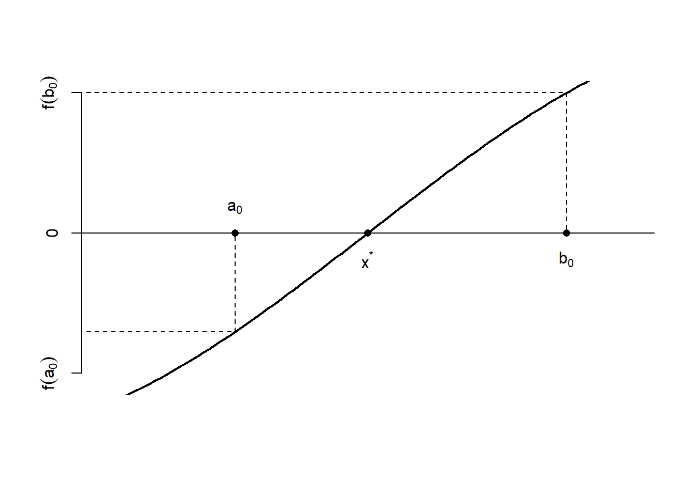
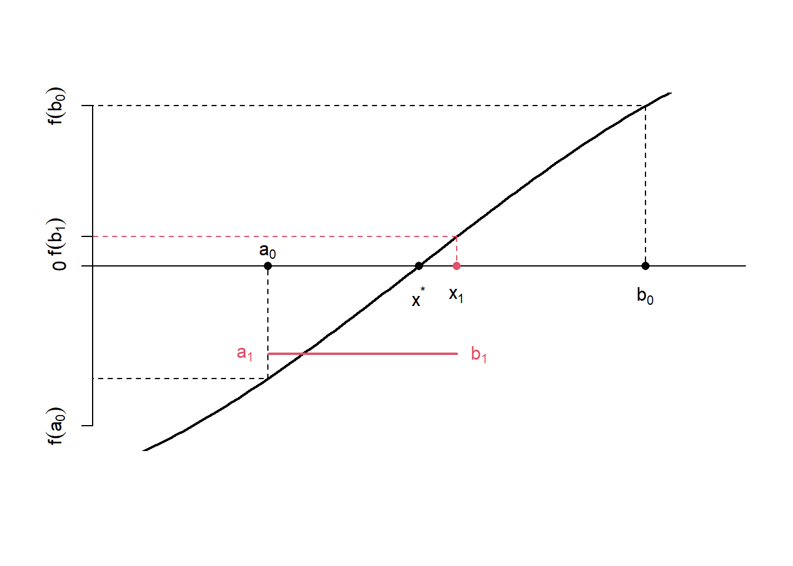
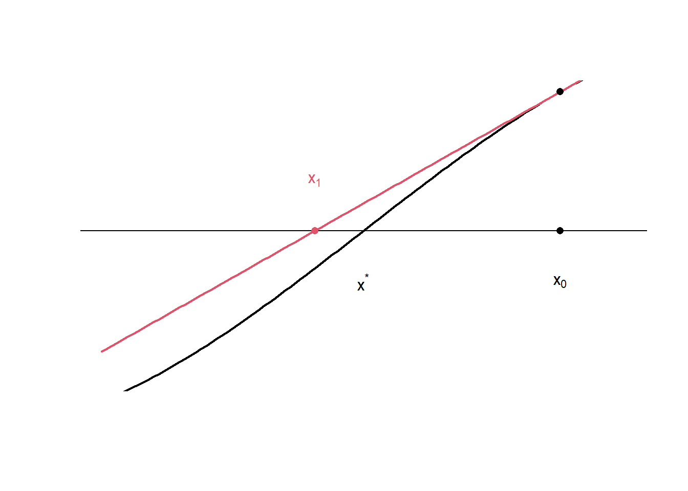
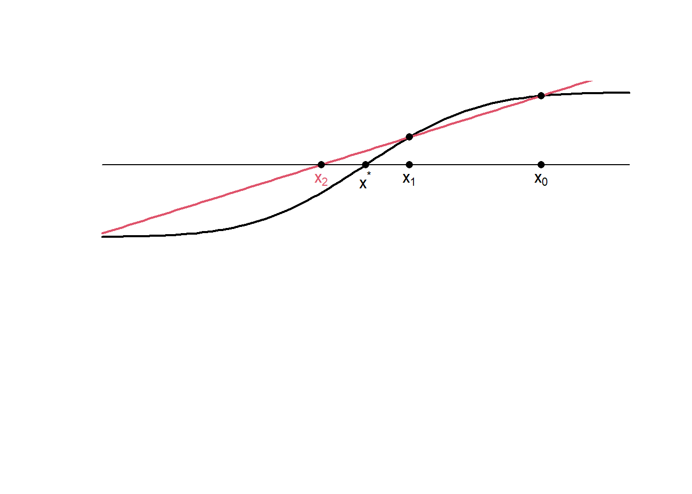

1 Solução de equações
Seja \(f(x)\) uma função real e contínua. O valor \(x^\star\) que satisfaz
\[f(x^\star)=0\] é denominado raíz, ou zero da função.
Considere agora o problema de encontrar o valor \(x\) tal que
\[f(x)=a.\] Isto é equivalente a encontrar a raiz da função \(g(x)\), dada por
\[g(x)=f(x)-a\] Portanto, todo problema de solução de equações pode ser reescrito como um outro de encontrar raízes.
Dizemos que uma equação possui solução analítica quando conseguimos encontrar a raíz explicitamente. Por exemplo, a equação \(f(x)=2x+4\) e considere o problema de encontrar a solução para \(f(x)=5\). Observe que
\[f(x)=5\Rightarrow 2x+1=5\Rightarrow 2x-4=0,\] o que implica que devemos encontrar a raiz de \(g(x)=2x-4\). Note que \(x^\star=2\) é a raiz e, portanto, a solução desejada.
Existem diversas equações que não podem ser resolvidas com simples manipulações algébricas, como por exemplo
\[x^3−x=1\]
Quando nos deparamos com esse tipo de equação, recorremos aos métodos numéricos. Estes são algoritmos que geram uma sequência de aproximações que convergem para a solução real com uma precisão desejada.
A escolha do método depende do tipo de equação e da natureza das variáveis envolvidas.
1.1 Método da bisseção
O método da bisseção é uma ferramenta versátil para encontrar raízes. Antes de apresentá-lo, é importante conhecer o Teorema do Valor Intermediário (ou Teorema de Bolzano).
Teorema do Valor Intermediário. Seja \(f\) uma função real definida no intervalo \([a,b]\). Então, se \(f(a)\leq d \leq f(b)\) ou \(f(b)\leq d \leq f(a)\), existe \(c\in[a,b]\) tal que \(f(c)=d\).
Observe que a condição do Teorema do Valor Intermediário pode ser reescrita para como \[g(a)=f(a)-d \leq 0 \leq g(b)=f(b)-d,\] (ou \(g(b)\leq 0\leq g(a)\)), o que implica que \(c\) é raíz de \(g(x)\). Temos o seguinte corolário.
Corolário. Seja \(f\) uma função real definida no intervalo \([a,b]\). Então, se \(f(a)\) e \(f(b)\) possuem sinais opostos, então existe \(x^\star\in[a,b]\) tal que \(x^\star\) é raíz de \(f(x)\).
Portanto, se conhecemos um intervalo \([a,b]\) tal que \(f(a)\) e \(f(b)\) tem sinais opostos, então temos a certeza de que há pelo menos uma raíz de \(f(x)\) dentro do intervalo \([a,b]\). A Figure 1.1 ilustra o Teorema do Valor Intermediário, considerando o intervalo \([a_0,b_0]\) e a raiz \(x^\star\).
O método da bisseção é baseado em aplicações sucessivas do Teorema do Valor Intermediário. Suponha que conhecemos um intervalo \([a_0,b_0]\) tal que \(f(a_0)\) e \(f(b_0)\) possuem sinais opostos e que contém a única raiz \(x^\star\). Considere como candidato à solução o valor
\[x_1=\frac{a_0+b_0}{2},\]
ou seja, o ponto médio do intervalo. Portanto, podemos escrever \([a_0,b_0]=[a_0,x_1]\cup[x_1,b_0]\). Ao calcular \(f(x_1)\), três coisas podem acontecer:
- \(f(x_1)=0\). Nesse caso, \(x_1\) é a solução do problema.
- \(f(x_1)\) e \(f(a_0)\) tem o mesmo sinal. Isso implica que \(f(x_1)\) e \(f(b_0)\) possuem sinais opostos e, portanto, a solução deve estar em \([x_1,b_0]\). Podemos então definir o novo intervalo de busca \([a_1,b_1]\) onde \(a_1=x_1\) e \(b_1=b_0\).
- \(f(x_1)\) e \(f(b_0)\) tem o mesmo sinal. Isso implica que \(f(x_1)\) e \(f(a_0)\) possuem sinais opostos e, portanto, a solução deve estar em \([a_0,x_1]\). Podemos então definir o novo intervalo de busca \([a_1,b_1]\) onde \(a_1=a_0\) e \(b_1=x_1\).
A figura abaixo mostra a Figure 1.1 novamente, agora com o ponto \(x_1\) em vermelho. Também em vermelho está representado o novo intervalo, com metade do comprimento do anterior, que contém a raiz e satisfaz as condições do Teorema do Valor Intermediário.

Como ilustrado acima, se o procedimento não encontra a solução, ele ao menos elimina metade do espaço de busca. Podemos então definir o novo candidato a solução \[x_2=\frac{a_1+b_1}{2},\] isto é, ponto médio do novo intevalo e verificar se a raiz está no intervalo \([a_1,x_2]\) ou \([x_2,b_1]\). Ao realizar esse procedimento \(n\) vezes, teremos a sequência
\[[a_0,b_0]\supset [a_1,b_1]\supset\cdots\supset [a_{n},b_{n}],\] onde o intervalo \([a_n,b_n]\) contém a raiz \(x^\star\). O comprimento deste intervalo é \[\frac{b_0-a_0}{2^n}\] o que implica que \[|x_{n}-x^\star|<\frac{b_0-a_0}{2^n}=\varepsilon_n,\] onde \(\varepsilon_n\) é o erro máximo da aproximação. É imediato que \(\lim_{n\rightarrow \infty}\varepsilon_n=0\), o que implica que o método converge para a solução. Abaixo, apresentamos o algoritmo do método da bisseção.
Algoritmo 1 (Método da Bisseção).
Para encontrar uma raiz de \(f(x)\) no intervalo \([a,b]\) com uma tolerância de \(\varepsilon\):
Pré-condição: \(f(a)f(b)<0.\)
Defina a tolerância \(\varepsilon>0.\) e faça \(i=1\)
Enquanto \(∣b−a|\geq\varepsilon\) repita os seguintes passos:
Calcule \(x_i=(a+b)/2\)
Se \(f(x_i)=0\), pare e retorne \(x^\star=x_i\).
Atualização do intervalo
- Se \(f(x_i)f(a)<0\), a raiz está o intervalo \([a,x_i]\). Faça \(b=x_i\)
- Senão, a raiz está no intervalo \([x_i,b]\). Faça \(a=x_i\)
- Faça \(i=i+1\)
O método da bisseção consiste em realizar as sucessivas divisões de intervalos até a iteração \(n\) que satifaz o erro máximo.
Exemplo Seja \[f(x)=x^2−x-1\] Vamos encontrar a raiz de \(f\) utilizando o método da bisseção. Observe que \(f(1)=-1\) e \(f(2)=5\) e, pelo Teorema do Valor Intermediário, há pelo menos uma raiz no intervalo [1,2]. O erro máximo na \(n\)-ésima iteração é
\[\varepsilon_n=\frac{1}{2^n}.\] Escolhendo \(n=15\) temos \(\varepsilon_{15}=0.00003\) (ou seja, uma precisão de quatro casas decimais). A tabela abaixo apresenta os intervalos e os pontos médios (soluções) para cada iteração.
[1] 1.000000 1.500000 1.500000 1.500000 1.562500 1.593750 1.609375 1.617188
[9] 1.617188 1.617188 1.617188 1.617676 1.617920 1.617920 1.617981 1.618011| Iteração | Solução | Erro | [a | b] |
|---|---|---|---|---|
| 1 | 1.500000 | Inf | 1.500000 | 2.000000 |
| 2 | 1.750000 | 0.250000 | 1.500000 | 1.750000 |
| 3 | 1.625000 | 0.125000 | 1.500000 | 1.625000 |
| 4 | 1.562500 | 0.062500 | 1.562500 | 1.625000 |
| 5 | 1.593750 | 0.031250 | 1.593750 | 1.625000 |
| 6 | 1.609375 | 0.015625 | 1.609375 | 1.625000 |
| 7 | 1.617188 | 0.007812 | 1.617188 | 1.625000 |
| 8 | 1.621094 | 0.003906 | 1.617188 | 1.621094 |
| 9 | 1.619141 | 0.001953 | 1.617188 | 1.619141 |
| 10 | 1.618164 | 0.000977 | 1.617188 | 1.618164 |
| 11 | 1.617676 | 0.000488 | 1.617676 | 1.618164 |
| 12 | 1.617920 | 0.000244 | 1.617920 | 1.618164 |
| 13 | 1.618042 | 0.000122 | 1.617920 | 1.618042 |
| 14 | 1.617981 | 0.000061 | 1.617981 | 1.618042 |
| 15 | 1.618011 | 0.000031 | 1.618011 | 1.618042 |
1.2 Método Newton-Raphson
Considere o problma de encontrar uma raiz de \(f(x)\). Seja \(x_0\) um ponto próximo da raiz \(x^\star\). A equação da reta tangente ao ponto \(x_0\) é dada por
\[f(x)=f(x_0)+(x-x_0)f'(x_0).\] A Figure 1.3 ilustra a reta tangente (em vermelho) ao ponto \(x_0\) para uma certa função. Observe que a raiz da reta tangente, marcada como \(x_1\) no gráfico, está mais próxima de \(x^\star\) do que o ponto \(x_0\).

A raiz \(x_1\) é calculada do seguinte modo: \[0=f(x_0)+(x_1-x_0)f'(x_0)\Rightarrow x_1=x_0-\frac{f(x_0)}{f'(x_0)}.\]
Podemos então encontrar a reta tangente ao ponto \(x_1\). Por sua vez, a raiz desta reta, denominada por \(x_2\), estará mais próxima de \(x^\star\) do que \(x_1\). Após realizar o mesmo procedimento \(n\) vezes teremos
\[x_n=x_{n-1}-\frac{f(x_{n-1})}{f'(x_{n-1})}\]
Intuitivamente, temos que \(x_n\) deve estar mais próximo de \(x^\star\) na medida que \(n\rightarrow\infty\). Abaixo, segue o algoritmo do método de Newton-Raphson.
Algoritmo 2. (Método de Newton-Raphson)
Para encontrar a raiz \(x^\star\) de \(f(x)\) com um erro \(\varepsilon\).
Pré-condição: \(f(x)\) é diferenciável com \(f'(x)\neq 0\) para qualquer \(x\) na vizinhança de \(x^\star\). É necessário um valor \(x_0\) próximo de \(x^\star\)
Defina \(x_{atual}=x_0\) e erro=\(+\infty\)
Enquanto o erro for maior que \(\varepsilon\) repita os seguintes passos:
Calcule \(x_m=x_{atual}-\frac{f(x_{atual})}{f'(x_{atual})}\)
Calcule erro\(=|x_m-x_{atual}|\) e faça \(x_{atual}=x_m\).
Retorne \(x^\star=x_m\).
O método
Teorema de Kantorovich (simplificado) Seja \(x_0\) um ponto inicial para o método Newton-Raphson. A convergência para a raiz de \(f(x)\) é garantida se:
\(f'(x_0)\neq 0\)
Existe uma constante \(L\) que limita a segunda derivada, ou seja \(|f''(x_0)|\leq L\) em algum intervalo contento \(x_0\).
A seguinte condição é satisfeita: \[h_0=\frac{|f(x_0)|}{f'(x_0)^2}L\leq \frac{1}{2}.\]
Métodos de quase-Newton.
Uma das desvantagens do método de Newton-Raphson é a necessidade de obter uma expressão analítica para a derivada de \(f(x)\). Qualquer método que utilize a mesma estrutura do Newton-Raphson mas troca a forma analítica de \(f'(x)\) por uma aproximação pertence à classe de métodos de quase-Newton.
.
1.3 Método da secante
Seja \(x^\star\) a raiz de \(f(x)\) e sejam \(x_0\) e \(x_1\) dois valores próximos de \(x^\star\). A reta secante aos pontos \((x_0,f(x_0))\) e \((x_1,f(x_1))\) é dada por \[f(x)=f(x_1)+ (x-x_1)\frac{f(x_1)-f(x_0)}{x_1-x_0}.\]
Assim como no métod Newton-Raphson, a raiz da reta secante acima tende a estar mais próxima de \(x^\star\) do que \(x_0\) e \(x_1\). A Figure 1.4 ilustra essa afirmação, onde o ponto \(x_2\) é a raiz da reta secante (em vermelho).

O ponto \(x_2\) é obtido do seguinte modo:
\[0=f(x_1)+(x_2-x_1)\frac{f(x_1)-f(x_)}{x_1-x_0}\Rightarrow x_2=x_1-f(x_1)\frac{x_1-x_0}{f(x_1)-f(x_0)}.\] De modo análogo, podemos construir a reta secante aos pontos \((x_1,f(x_1))\) e \((x_2,f(x_2))\) e encontrar sua raiz \(x_3\). Ao realizar esse procedimento diversas vezes, teremos que o ponto \(x_n\) será dado por
\[ x_n=x_{n-1}-f(x_{n-1})\frac{x_{n-1}-x_{n-2}}{f(x_{n-1})-f(x_{n-2})}.\] Podemos continuar a iteração até obter \(|x_n-x_{n-1}|<\varepsilon\).
Algoritmo 3. (Método da secante)
Para encontrar a raiz \(x^\star\) de \(f(x)\) com um erro \(\varepsilon\).
Pré-condição: São necessários valores \(x_0\) e \(x_1\) próximos de \(x^\star\)
Defina erro=\(+\infty\) e \(n=1\)
Enquanto o erro for maior que \(\varepsilon\) repita os seguintes passos:
\(n=n+1\)
Calcule \(x_n=x_{n-1}-f(x_{n-1})\frac{x_{n-1}-x_{n-2}}{f(x_{n-1})-f(x_{n-2})}\)
Calcule erro\(=|x_n-x_{n-1}|\).
Retorne \(x^\star=x_n\).
Exemplo - (W de Lambert) Considere o problema de encontrar a raiz de \(f(x)= e^{-x}-x\). O resultado, conhecido como constante de \(W\) de Lambert, é um número irracional e é aproximadamente 0,567143.
Vamos escolher os pontos iniciais \(x_0=0\) e \(x_1=1\), onde \[\begin{align}f(0)&=e^{-0}-0=1\\f(1)&=e^{-1}-1\approx-0,6321.\end{align}\] A fórmula de iteração é dada por
\[x_n=x_{n-1}-(e^{-x_{n-1}}-1)\frac{x_{n-1}-x_{n-2}}{e^{-x_{n-1}}-x_{n-1}-e^{-x_{n-2}}+x_{n-2}}.\]
Vamos fixar o erro em \(10^{-7}\) para obter uma precisão de 6 casas decimais.
| Iterações | x | Erro |
|---|---|---|
| 1 | 0.612700 | 0.387300 |
| 2 | 0.563838 | 0.048861 |
| 3 | 0.567170 | 0.003332 |
| 4 | 0.567143 | 0.000027 |
| 5 | 0.567143 | 0.000000 |
Fica como exercício provar que o método da secante pertence à classe dos métodos de quase-Newton. Assim como o método de Newton-Raphson, esse método tem boas propriedades para funções duas vezes continuamente diferenciáveis, como mostra o teorema abaixo.
Teorema da convergência do método da secante. Seja \(f\) uma função real, contínua e duas vezes diferenciável no intervalo \([a,b]\), onde \(x^\star\in(a,b)\) é a única raiz nesse intervalo e \(f'(x^\star)\neq 0\)
Se as soluções iniciais \(x_0\) e \(x_1\) forem escolhidas suficientemente próximas de \(x^\star\) então a sequência \(x_2,\ldots,x_n\) produzida pelo método da secante irá convergir para \(x^\star\).
Atenção. O teorema acima mostra que não basta escolher dois valores dentro do intervalo \([a,b]\) que contém \(x^\star\). Ou seja, diferente do método da bisseção, essa escolha não é garantia de convergência. Isso ocorre porque, dependendo da função, a escolha dos pontos iniciais pode levar a geração de candidatos para fora do intervalo \([a,b]\) fazendo com que a convergência demore ou mesmo falhe.
1.4 Método da interpolação quadrática inversa (Método de Muller)
O método da interpolação quadrática inversa segue a mesma ideia do método da secante. Considere três pontos, \(x_1,x_2,x_3\) próximos de \(x^\star\). Na \(i\)-ésima iteração, o próximo candidato à solução é a raiz da parábola que passa pelos pontos \(x_{i-1},x_{i-2},x_{i-3}\), dada por
\[x_{i} = x_{i-1} - \frac{2f(x_{i-1})}{\omega \pm \sqrt{\omega^2 - 4f(x_{i-1})\delta_{i-1}}}\] onde \[\begin{align} \delta_{i-1} &= \frac{f(x_{i-1})-f(x_{i-2})}{x_{i-1}-x_{i-2}} + \frac{f(x_{i-1})-f(x_{i-3})}{x_{i-1}-x_{i-3}} - \frac{f(x_{i-2})-f(x_{i-3})}{x_{i-2}-x_{i-3}}\\ \omega &= \frac{f(x_{i-1})-f(x_{i-2})}{x_{i-1}-x_{i-2}} + \delta_{i-1}(x_{i-1}-x_{i-2}) \end{align}\]
Embora esse método possa convergir rapidamente para a raiz, os pontos iniciais devem estar próximos da raiz. Além disso, o algoritmo pode falhar se em algum momento os valores de \(f(x_i),f(x_{i-1})\) ou \(f(x_{i-2})\) concidirem. Portanto, é recomendado que esse método seja utilizado em conjunto com outro, conforme discutido na seção Métodos Híbridos.
1.5 Método da falsa posição (regula falsi)
O método da falsa posição é uma combinação do método da secante com o método da bisseção. Assim como neste último, é necessário começar com um intervalo \([x_a,x_b]\) no qual \(f(x_a)\) e \(f(x_b)\) têm sinais opostos.
Primeiro, calcula-se a raiz da reta secante que passa pelos pontos \((x_a,f(x_a))\) e \((x_b,f(x_b))\), dada por
\[ x_c=x_b-f(x_b)\frac{x_b-x_a}{f(x_b)-f(x_a)}. \] Em seguida, verifica-se qual dos intervalos \([x_a,x_c]\) ou \([x_c,x_b]\) contém a raiz. Então, repete-se a busca.
Assim como ocorre no método da bisseção, o método da falsa posição cria uma sequência de intervalos encaixados que contém a raiz, convergindo portanto para a verdadeira solução. Espera-se que a escolha de \(x_c\) esteja mais próxima da raiz do que o ponto médio do intervalo.
Algoritmo 4 (Método da Falsa Posição).
Para encontrar uma raiz de \(f(x)\) no intervalo \([a,b]\) com uma tolerância de \(\varepsilon\):
Pré-condição: \(f(a)f(b)<0.\)
Defina a tolerância \(\varepsilon>0.\) e faça \(i=1\)
Enquanto \(∣b−a|\geq\varepsilon\) repita os seguintes passos:
Calcule \(x_i=b - f(b)\frac{b-a}{f(b)-f(a)}\)
Se \(f(x_i)=0\), pare e retorne \(x^\star=x_i\).
Atualização do intervalo
- Se \(f(x_i)f(a)<0\), a raiz está o intervalo \([a,x_i]\). Faça \(b=x_i\)
- Senão, a raiz está no intervalo \([x_i,b]\). Faça \(a=x_i\)
- Faça \(i=i+1\)
Exemplo Seja \[f(x)=x^2−x-1\] Anteriormente, encontramos a raiz de \(f\), iniciando com o intervalo [1,2] e fixando erro de \(0,00003\), que foi obtido em 15 iterações. A tabela abaixo apresenta os intervalos e os pontos médios (soluções) para o método da falsa posição até a obtenção do mesmo erro fixado no método da bisseção.
[1] 1 1 1 1 1 1 1 1 1 1 1 1 1 1 1 1| Iteração | Solução | Erro | [a | b] |
|---|---|---|---|---|
| 1 | 1.800000 | 1.000000 | 1 | 1.800000 |
| 2 | 1.712871 | 0.087129 | 1 | 1.712871 |
| 3 | 1.669659 | 0.043212 | 1 | 1.669659 |
| 4 | 1.646784 | 0.022875 | 1 | 1.646784 |
| 5 | 1.634245 | 0.012539 | 1 | 1.634245 |
| 6 | 1.627238 | 0.007007 | 1 | 1.627238 |
| 7 | 1.623280 | 0.003958 | 1 | 1.623280 |
| 8 | 1.621031 | 0.002249 | 1 | 1.621031 |
| 9 | 1.619748 | 0.001283 | 1 | 1.619748 |
| 10 | 1.619015 | 0.000733 | 1 | 1.619015 |
| 11 | 1.618596 | 0.000419 | 1 | 1.618596 |
| 12 | 1.618356 | 0.000240 | 1 | 1.618356 |
| 13 | 1.618218 | 0.000137 | 1 | 1.618218 |
| 14 | 1.618140 | 0.000079 | 1 | 1.618140 |
| 15 | 1.618094 | 0.000045 | 1 | 1.618094 |
1.6 Métodos híbridos
Os métodos discutidos até o momento possuem vantagens e desvantagens, conforme sumarizado na tabela abaixo.
| Método | Ordem de Convergência | Vantagem | Desvantagem |
|---|---|---|---|
| Bisseção | Linear | Garante a convergência. Não exige o cálculo da derivada. | A convergência é lenta. |
| Falsa Posição | Linear | Geralmente converge mais rápido que a bisseção. Não exige o cálculo da derivada. | Pode ter convergência lenta se a função for muito côncava ou convexa. |
| Secante | Superlinear | Convergência rápida, sem precisar calcular a derivada. | Pode divergir se a aproximação inicial for ruim. |
| Interpolação Quadrática Inversa | Superlinear | Geralmente mais rápido que o método da secante. Pode encontrar raízes complexas. | Exige três pontos iniciais. Pode ser instável e falhar se os pontos forem colineares. |
| Newton-Raphson | Quadrática | Convergência extremamente rápida (se as condições forem atendidas). | Exige o cálculo da derivada. Pode divergir se a aproximação inicial for ruim. |
Os métodos híbridos são algoritmos que decidem em cada iteração qual método utilizar. Os objetivos dessas decisões são acelerar e garantir a convergência. Vamos apresentar a ideia por trás de dois métodos: Dekker e Brent.
O método de Dekker (1969) combina o método da bisseção com o da secante. sua ideia básica é utilizar o método da secante sempre que possível, criando verificações lógicas que evitem que o candidato à solução se afaste da raiz. Ele começa com um intervalo \([a,b]\) que contém a raiz \(x^\star\) (ou seja, \(f(a)\) e \(f(b)\) tem sinais opostos). Na sua \(i\)-ésima iteração:
- Geração dos candidatos. Dois candidatos são construídos, utilizando o método da bisseção e o da secante:
\[\begin{align}x_m&=\frac{a_{i-1}+b_{i-1}}{2}\\x_s&=b_{i-1}-f(b_{i-1})\frac{b_{i-1}-a_{i-1}}{f(b_{i-1})-f(a_{i-1})} \end{align}\] 2. Freio da secante. Se \(x_s\in[x_m,b_{i-1}]\), então o ponto da secante não se afastou da solução e fazemos \(b_{i}=x_s\). Senão, escolhemos \(b_i=x_m\) por segurança. O objetivo desse passo é evitar utilizar um ponto \(x_s\) afastado da solução.
Definindo o novo intervalo. Se \(f(a_{i-1})\) e \(f(b_i)\) tem sinais oposto, então \(a_i=a_{i-1}\). Em caso contrário, \(a_i=b_{i-1}\)
Permuta Se \(|f(a_i)|<|f(b_i)|\), então é provável que \(a_i\) seja um palpite melhor que \(b_i\). Então os valores \(a_i\) e \(b_i\) são permutados. Isso garante que a solução será dada pel convergência da sequência \(b_1,b_2,\ldots\)
O método de Brent (1973) é uma modificação do método de Dekker, començando também com um intervalo \([a,b]\) que contém a raiz. A principal diferença é que Brent adiciona mais verificações para garantir que a interpolação não apenas se aproxime da raiz, mas o faça de forma eficiente. Ele utiliza a interpolação quadrática inversa (que é mais rápida que a secante) e recorre à bisseção quando a interpolação não faz um progresso significativo.
Em geral, o método itera nos seguintes passos:
Geração do candidato: O algoritmo tenta encontrar um novo ponto, \(x_s\), usando a interpolação quadrática inversa. Se essa interpolação não for possível, ele recorre ao método da secante.
Testes de segurança: Antes de aceitar \(x_s\), ele é submetido a uma série de testes que o comparam com a garantia de progresso da bisseção. Se \(x_s\) não for significativamente melhor do que um passo de bisseção, o algoritmo descarta \(x_s\) e, em vez disso, usa o ponto médio \(x_m\) como candidato.
Atualização do intervalo. O novo intervalo é atualizado com base no candidato aceito (\(x_s\) ou \(x_m\)), garantindo que a raiz continue delimitada e que o ponto com o menor valor de \(f(x)\) seja sempre a melhor estimativa.
1.7 Funções para encontrar raízes no R
O R oferece várias funções para encontrar raízes de equações não-lineares, tanto no pacote base (stats) quanto em pacotes externos.
1.7.1 Pacote stats
A função uniroot é a implementação do método de Brent. Seus principais argumentos são:
f: a função da qual se deseja obter a raizinterval: vetor contendo os pontos extremos do intervalo de buscatol: tolerância desejada (o valor padrão é 10^{-10})maxiter: número máximo de tentativas (o valor padrão é 1000)
1.7.2 Pacote pracma
O pacote pracma traz diversas rotinas de cálculo numérico, incluindo os métodos clássicos de busca de raízes.
Os métodos da bisseção, secante e falsa posição estão implementados nas funções bisect, secant e regulaFalsi, respectivamente. Seus argumentos são
f: a função da qual se deseja obter a raiza: limite inferior do intervalo para a bisseção e falsa posição; um ponto perto da raiz para a secanteb: limite superior do intervalo para a bisseção e falsa posição; um ponto perto da raiz para a secantetol: tolerância desejada (o valor padrão é \(10^{-10}\))maxiter: número máximo de tentativas (o valor padrão é 100)
O método da interpolação quadrática inversa (Muller) está implementado na função muller, cujos argumentos são
f: a função da qual se deseja obter a raizp0,p1,p2: três pontos iniciais, próximos da raiztol: tolerância desejada (o valor padrão é .0001)maxiter: número máximo de tentativas (o valor padrão é \(10^{-10}\))
O método de Brent está implementado na função brent e possui os argumentos
f: a função da qual se deseja obter a raiza,b: intervalo que contém a raiz (as imagens nas extremidades do intervalo devem ter sinais opostos)tol: tolerância desejada (o valor padrão é \(10^{-12}\))maxiter: número máximo de tentativas (o valor padrão é 500)
A função newtonRaphson (ou de modo equivalente, newton) encontra a raiz da função utilizando o método Newton-Raphson. Os argumentos são
fun: a função da qual se deseja obter a raizx0: valor inicial, próximo da raizdfun: a função da derivada de \(f\). Sedfun=NULL, o método da secante será utilizadotol: tolerância desejada (o valor padrão é \(10^{-8}\))maxiter: número máximo de tentativas (o valor padrão é 500)
1.8 Exercícios
Exercício Seja \(f:[a,b]\rightarrow\mathbb{R}\) uma função contínua tal que \(f(a)f(b)<0\). O método da bisseção gera uma sequência de intervalos encaixados \([a_k,b_k]\) onde a raiz \(x^\star\in[a_k,b_k]\) para todo \(k\in\mathbb{N}\).
Discuta a unicidade da raiz encontrada por esse método. Sob quais condições o Método da Bisseção garante que a raiz encontrada é única no intervalo inicial \([a,b]?\)
Se a função tiver múltiplas raízes no intervalo, o que podemos afirmar sobre a raiz que o método converge?
Exercício Implemente o método da bisseção para encontrar a raiz da função \[f(x)=\log(x)+x^2-4.\]
Utilize o intervalo inicial \([1,2]\). (Verifique previamente se \(f(1)\) e \(f(2)\) possuem sinais opostos). O critério de parada deve ser a obtenção de um erro absoluto máximo inferior a \(10^{−6}\). Ao final, imprima:
- A raiz aproximada encontrada.
- O número total de iterações realizadas.
- Uma tabela com os valores \(x_n\), \(f(x_n)\) e \(\varepsilon_n\).
Exemplo. Seja \(X\) uma variável aleatória contínua, cuja função distribuição é dada por \(F(x)\). O quantil \(100p\%\) é o valor \(x_p\) que satisfaz \[F(x_p)=p.\] Explique porque existe um único \(x_p\) que satifaz a equação acima e utilize esse fato para descrever como obter \(x_p\) a partir do método da bisseção.
Exercício. Seja \(X\) uma variável aleatória com a seguinte função distribuição \[F(x)=1-\frac{1}{5}(x^2+4x+5) e^{-x},\] com \(x>0\). Encontre a mediana de \(X\) utilizando o método da bisseção.
Exercício Considere o problema de resolver \(\sqrt{x}=3\). Prove que o método de Newton-Raphson vai convergir para a verdadeira solução se o valor inicial \(x_0\) satisfaz
\[\frac{|x_0^2-7|}{2x_0^2}\leq \frac{1}{2}.\]
Exercício. Neste exercício você vai demonstrar o Teorema da Convergência do método da secante. Considere que as condições do teorema estão satisfeitas. É fato que, para qualquer ponto \(x\) próximo de \(x^\star\), a função \(f(x)\) pode ser aproximada por
\[f(x)\approx f(x^\star) +(x-x^\star)f'(x^\star)+\frac{1}{2}(x-x^\star)f''(x^\star)\] onde a aproximação é obtida por expansão em séries de Taylor. Considere então que \(x_n\) e \(x_{n-1}\) estão próximas de \(x^\star\). Seja \(\xi_n=x_n-x^\star\).
- Prove que \[\begin{align}f(x_n)\approx \xi_nf'(x^\star)+\frac{1}{2}\xi_n^2 f''(x^\star)\end{align}\]
- Mostre que
\[\begin{align}f(x_n)-f(x_{n-1})\approx (\xi_n-\xi_{n-1})\left[f'(x^\star)+\frac{1}{2}f''(x^\star)(\xi_n+\xi_{n-1})\right]\end{align}\]
- Mostre que a fórmula de iteração do método da secante pode ser reescrita como
\[\xi_{n+1}=\xi_n-f(x_n)\frac{\xi_n-\xi_{n-1}}{f(x_n)-f(n-1)}\]
- A partir dos passos 2 e 3, prove que
\[\xi_{n+1}=\xi_n-\frac{f(x_n)}{f'(x^\star)+\frac{1}{2}f''(x^\star)(\xi_n+\xi_{n-1})}\]
- Utilize a aproximação para \(f(x_n)\) para mostrar que
\[\xi_{n+1}\approx\xi_n-\frac{\xi_nf'(x^\star)+\frac{1}{2}\xi_n^2 f''(x^\star)}{f'(x^\star)+\frac{1}{2}f''(x^\star)(\xi_n+\xi_{n-1})}=\xi_n-\frac{\xi_n+\frac{1}{2}\xi_n^2 \frac{f''(x^\star)}{f'(x^\star)} }{1+\frac{1}{2}\frac{f''(x^\star)}{f'(x^\star)}(\xi_n+\xi_{n-1})}\]
Se \(u\) é próximo de zero, é verdade que \[\frac{1}{1+u}\approx 1-u\] Como \((\xi_n+\xi_{n-1})\) é próximo de zero faça \[u=\frac{1}{2}\frac{f''(x^\star)}{f'(x^\star)}(\xi_n+\xi_{n-1})\] e mostre que \[\xi_{n+1}\approx\xi_n-\frac{\xi_nf'(x^\star)+\frac{1}{2}\xi_n^2 f''(x^\star)}{f'(x^\star)+\frac{1}{2}f''(x^\star)(\xi_n+\xi_{n-1})}=\xi_n-\left(\xi_n+\frac{1}{2}\xi_n^2 \frac{f''(x^\star)}{f'(x^\star)}\right)\left(1-\frac{1}{2}\frac{f''(x^\star)}{f'(x^\star)}(\xi_n+\xi_{n-1})\right)\]
Como \(\varepsilon_n\) é pequeno, o valor de \(\varepsilon_n^2\approx 0\). Utilize essa informação para mostrar que
\[\xi_{n+1}\approx \frac{1}{2}\frac{f''(x^\star)}{f'(x^\star)}\xi_n\xi_{n-1}\] Isto implica que \(|\xi_{n+1}|<|\xi_n|\)
- Conclua que, se \(x_0,x_1\) estão próximos o suficiente da raiz, então o método da secante é convergente.
Exercício. Dizemos que \(X\) tem distribuição Lindley(\(\theta\)) se sua função densidade é dada por \[f(x|\theta)=\frac{\theta^2}{1+\theta}(1+x)e^{-\theta x},\] onde \(x,\theta>0\). Pode-se provar que
\[F(x|\theta)=1-\frac{1+\theta(1+x)}{1+\theta}e^{-\theta x}\] Para \(\theta=1\) e considerando um erro de \(10^{-4}\), encontre a mediana desse modelo considerando os métodos
- Bisseção
- Secante
- Falsa Posição
- Muller
- Brent
- Newton-Raphson
Você pode utilizar as funções ja implementadas no R. Para cada método, guarde o número de iterações até a convergência. Qual método convergiu mais rápido?